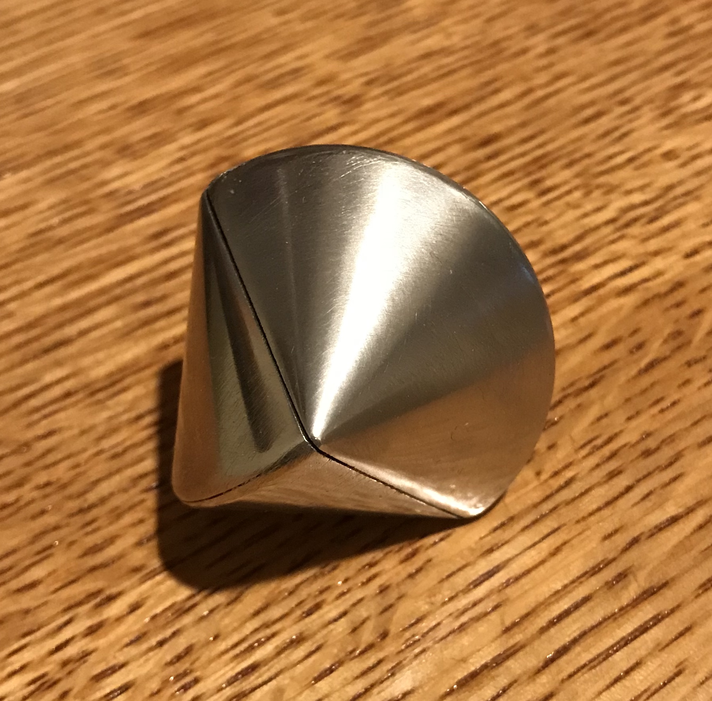

I saw this "sphericon" on YouTube. It was made by printing, but I thought I should be able to make one using my machines. I had some 1 3/4" aluminum rod available and settled on this dimension. A sphericon is defined by taking a double cone (two cones joined at their bases), splitting it in half from point to point, and then rotating the two halves 90° so the points line up with the equator. Reattaching the two rotated halves folowed by putting a radius on the joined edges should complete the sphericon.
Making the sphericon of this dimension implies that the total height of the double cone is the same length as the diameter at the 'equator'. Consequently, the included angle of the tip is 90°. The length of one half of the double cone equals the radius or half of 1 3/4" = 7/8". Two lengths of the aluminum were cut off with the bandsaw to 1 3/8" long (7/8" + 1/2" waste). These were faced on both ends. One of these parts was then cut to a cone shape using the Sherline compound attachment. The compound uses a cutting tool mounted upside down and cuts on the back side of the part. Cutting the cone was a very slow process as the 1 3/4" diameter pushes the limits of the Sherline. The tip was rounded over with sandpaper and the entire cone was sanded to 1000 grit. A nice cone was the result as seen in the following picture.

The second cone was made similarly, but on the South Bend. Made passes of 0.030" and probably could have gone significantly higher. WD-40 spray was used as cutting fluid. The final passes were 10 and 5 thousandths. Time required was about 30 minutes as compared to the 2 hours on the Sherline. Again the tip was rounded over and the entire cone sanded to 1500 grit. The included angles were 88° and 87°, respectively, on the Sherline and the South Bend.
The plan for cutting off the waste stock is to use the cutoff tool in the Sherline and cut to a comfortable depth. The cut will be completed in the vise with a hacksaw. Sanding will then finish the base of each cone. The plan worked out very well. The parting went about 3/8" deep going very slowly with plenty of WD-40. The hacksaw work was quite straightforward. The picture below shows the results.

Sanding the bottoms of the cones was not quite so simple. They were sanded with 150 grit paper. It took a lot of sanding to get rid of the raised area and a power sander was used with some difficulty as holding the cones is challenging. Unfortunately, this sanded the edges significantly and a clear gap was left all around the edge, when the two faces were mated. A number of things were attempted to sand the middle. The only successful approach was gluing sandpaper to a wooden top, holding this in the drill press and using it to sand the center of the disks. This led to a minimal gap and the two cones were glued together with Loctite 638. They were clamped overnight.

A device was needed to hold the double cone "between centers" for rounding the join. The headstock was fitted with the four-jaw chuck and a 1" X 1" square of aluminum was approximately centered. One end was faced and center drilled. The opposite was faced, drilled 1/4" to a depth of 3/4", and deeply countersunk. (The countersink used was ~85° included angle.) This part was left in the chuck and set aside. A 3/4" length of 1/2" aluminum rod was chucked in the three-jaw chuck, faced and center drilled. The other end was also faced, and then drilled 1/4" and deeply countersunk. The first part was destined for the headstock and consequently fitted with a circle of 1500 grit sandpaper in the countersink. About a quarter of the circle was removed and it was then pressed into place and glued with Loctite.

The double cone was placed between the two parts of the jig and the equator was rounded with a file and cleaned up with 1500 grit sandpaper.

The next task was cutting the double cone in half from tip to tip. Another jig needed to be made to hold the double cone for cutting. In some ways this is similar to the rounding jig. Two pieces of wood will have deeply countersunk holes and will be bolted together by their corners. The miter saw will be used to start a straight cut across the two wooden parts. All of the above worked as planned. With a starting saw kerf the hack saw ran true and the double cone was split down the middle. The following two pictures show the process and the result.


After a lot of sanding on the cut faces the two halves were rotated 90° with respect to one another and glued together with Loctite. After letting the glue dry about 4 hours the entire sphericon was sanded to 1500 grit and then polished on the new buffing wheel with the white compound. The photo below shows the final sphericon.
Here is a short clip of the sphericon's crazy walk and roll.
It is June, 2021 and I have decided to make two more sphericons as presents for Kelly and Dave. This morning four 1 1/2" lengths of 1 3/4" aluminum rod were cut with the bandsaw. The eight ends were faced. The compound on the South Bend was set at 45°. The first cone was cut. A square indicated the cone was significantly less than 90° included angle. The compound was adjusted, a cut was taken, and the resulting angle was measured. After a few passes the compound was finally set at 45°. The angle on the dial was closer to 47°. The other three cones were cut at this same angle setting. All four cones had the tips rounded with sand paper and were then sanded to 1000 grit. The first photo below shows the setup and the second shows the four completed cones.


The cones were parted off this morning. The cone ended rod was placed in the three jaw chuck and centered by eye against the parting tool. A fairly wide parting tool was used as that was the tool in the best holder. The parting tool was also centered by eye. Starting a groove was loud, but as soon as the parting tool was in a bit of a slot the process went smoothly and quietly. The tool was advanced very slowly. Three cones had very little material for holding. Parting was stopped leaving about 1/2", which was finished with a hacksaw. The three photos below show the setup and the resulting cones.


A wooden ball was formed on the end of a post in the lathe. The post had a 5/16" hole drilled and tapped 3/8-24. A scrap brass threaded rod was screwed into the hole. The ball was covered in 40 grit sand paper cut from a disk. This was held in the drill press and used to sand the cut off stem on one of the cones. The sanding was very slow and ineffective. I switched to sanding by hand on the belt of the belt sander when it was turned off. This was also slow, but reasonably effective.
After a couple of hours of sanding the cones were glued together with Loctite. They were clamped: one with the cutting jig and one using just a clamp. After removing the clamps the double cones were placed in the same aluminum block and rod jig as above and the joints were sanded with 150 grit until rounded. The cones were then sanded up to crocus cloth (maybe 1000?). The second picture below shows the two finished double cones.


Using the same jig as before the two double cones were cut in half with a hacksaw. It was only about 800 strokes per double cone. The split cones were extremely hot when removed from the jig. The first picture below shows the out of focus jig in use, while the second shows the four resulting pieces.


Quite a bit of sanding was required to flatten the cut faces of the halved double cones. When they were sufficiently flat, they were glued together with Loctite. The photo shows the clamped halves.

After clamping for four hours the clamps were removed. This morning the completed sphericons were sanded first with 220 grit sand paper to soften all of the edges glued in this last glue-up. The sphericons were sanded progressively with 320, 400, and 600 grit. They were polished on the buffing wheel with white rouge. The picture below shows the final state of the two sphericon gifts.